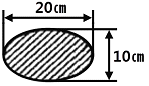
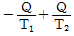
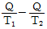
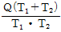
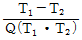
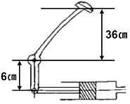

자동차정비기사 (2015-03-08 기출문제)
1과목: 일반기계공학
1. 용접부의 검사를 파괴시험과 비파괴시험으로 분류할 때 다음 중 비파괴시험법이 아닌 것은?
- 인장시험
- 액체침투시험
- 누설시험
- 자분탐상시험
(정답률: 75%)

2. 포금(Gun metal)의 합금 성분으로 적절한 것은?
- 구리(88%), 주석(10%), 아연(2%)
- 구리(88%), 아연(10%), 주석(2%)
- 구리(80%), 주석(18%), 아연(2%)
- 구리(80%), 아연(18%), 주석(2%)
(정답률: 73%)
3. 재료의 단면 형상과 관련하여 응력집중이 커지는 경우는?
- 홈의 각도가 클수록
- 홈의 깊이가 낮을수록
- 단면 형상의 변화가 급변할수록
- 단면가공부의 표면을 선반가공보다 연삭가공을 할 경우
(정답률: 64%)
4. 두께 1.5㎜인 연강판에 지름 25㎜의 구멍을 펀칭할 때 최소 펀칭력은 약 몇 kgf 이상이어야 하는가? (단, 판의 전단저항은 20kgf/mm2이다.)
- 500
- 1570
- 2357
- 3250
(정답률: 31%)
5. 그림과 같이 타원 단면을 갖는 봉이 하중 200N의 인장 하중을 받을 때, 이 봉에 작용한 인장응력은 몇 N/cm2인가?

- 1.27
- 12.7
- 127
- 1270
(정답률: 64%)
6. 유체기계에서 발생되는 공동현상(cavitation)의 발생을 예방하는 방법으로 옳지 않은 것은?
- 손실수두를 줄인다.
- 양흡입 펌프를 사용한다.
- 펌프의 설치높이를 가능한 낮추어 흡입양정을 짧게 한다.
- 펌프의 회전수를 높이고 마찰손실이 작은 신관을 사용 한다.
(정답률: 68%)
7. 400℃의 온도에 장시간 정하중을 받는 재료의 허용응력을 구하기 위한 기초강도로 가장 적합한 것은?
- 극한 강도
- 크리이프 한도
- 피로 한도
- 최대 전단응력
(정답률: 77%)
8. 가공물을 회전시키면서 복잡한 형상이나 속이 빈 대형 공작물의 내면을 축대칭 형상으로 가공하는 데 가장 적합한 공작기계는?
- 셰이퍼
- 보링머신
- 밀링머신
- 탁상선반
(정답률: 69%)
9. 열처리에서 질화법에 관한 설명으로 옳지 않은 것은?
- 경도는 침탄경화보다 크다.
- 가열 온도는 침탄법보다 낮다.
- 경화층이 얇으므로 산화에 약하다.
- 담금질을 하지 않으므로 변형이 적다.
(정답률: 60%)
10. 유량이 0.5m3/s일 때 유속을 약 2m/s로 흐르도록 하려면 원형관 단면의 지름을 몇 ㎜로 하여야 하는가?
- 78.9
- 564
- 789
- 1564
(정답률: 43%)
11. 금속을 가열하여 용해시킨 후 주형(mould)에 주입해 냉각 응고시켜 목적하는 제품을 만드는 것을 무엇이라 하는가?
- 주조
- 압연
- 제관
- 단조
(정답률: 75%)
12. 회전축은 분당 1000회전으로 100kW의 회전력을 전달한다. 굽힘모멘트 200N·m를 받을 때 상당비틀림모멘트는 몇 N·m인가?
- 925.9
- 955.4
- 975.7
- 995.1
(정답률: 49%)
13. 인장코일 스프링에서 500N의 하중이 작용할 때, 늘어난 길이가 80㎜일 경우 유효권수는? (단, 소선의 지름은 8㎜, 코일 스프링의 평균지름은 64㎜, 전단 탄성계수는 8X104N/mm2이다.)
- 6.5
- 12.5
- 25
- 50
(정답률: 17%)
14. 왕복운동기관의 직선운동을 회전운동으로 바꾸는 축은?
- 직선 축
- 크랭크 축
- 중간 축
- 플랙시블축
(정답률: 80%)
15. 유압기기에서 유량제어밸브에 속하는 것은?
- 4방향밸브(4-way valve)
- 셔틀밸브(shuttle valve)
- 시퀀스 밸브(sequence valve)
- 스로틀 밸브(throttle valve)
(정답률: 62%)
16. 한 쌍의 기어가 물릴 때 서로 접하는 부분의 궤적을 무엇이라 하는가?
- 모듈
- 피치원
- 원주 피치
- 지름피치
(정답률: 56%)
17. 0.01㎜ 까지 측정할 수 있는 마이크로미터의 나사 피치와 딤블의 눈금에 대한 설명으로 가장 적합한 것은?
- 피치는 0.5㎜, 원주는 50등분 되어 있다.
- 피치는 0.5㎜, 원주는 100등분 되어 있다.
- 피치는 0.1㎜, 원주는 20등분 되어 있다.
- 피치는 1.0㎜, 원주는 25등분 되어 있다.
(정답률: 72%)
18. 피치 3㎜인 2줄 나사에서 2바퀴 회전시키면 리드는 몇 ㎜인가?
- 2
- 3
- 6
- 12
(정답률: 83%)
19. 큰 회전력을 얻을 수 있고 양 방향회전축에120° 각도로 2조 설치하는 키는?
- 원뿔 키(cone key)
- 새들 키(saddle key)
- 접선 키(tangent key)
- 드라이빙 키(driving key)
(정답률: 68%)
20. 금속 또는 합금이 온도의 변화에 따라 내부의 결정격자가 바뀌는 변태를 무엇이라 하는가?
- 자기 변태
- 편석변태
- 소성 변태
- 동소변태
(정답률: 64%)
2과목: 기계열역학
21. 카르노 사이클에 대한 설명으로 옳은 것은?
- 이상적인 2개의 등온과정과 이상적인 2개의 정압과정으로 이루어진다.
- 이상적인 2개의 정압과정과 이상적인 2개의 단열과정으로 이루어진다.
- 이상적인 2개의 정압과정과 이상적인 2개의 정적과정으로 이루어진다.
- 이상적인 2개의 등온과정과 이상적인 2개의 단열과정으로 이루어진다.
(정답률: 61%)
22. 과열기가 있는 랭킨사이클에 이상적인 재열사이클을 적용 할 경우에 대한 설명으로 틀린 것은?
- 이상 재열사이클의 열효율이 더 높다.
- 이상 재열사이클의 경우 터빈 출구 건도가 증가한다.
- 이상 재열사이클의 기기 비용이 더 많이 요구된다.
- 이상 재열사이클의 경우 터빈 입구 온도를 더 높일 수 있다.
(정답률: 50%)
23. 밀폐계에서 기체의 압력이 500kPa로 일정하게 유지 되면서 체적이 0.2m3에서 0.7m3로 팽창하였다. 이 과정 동안에 내부에너지의 증가가 60kJ이라면 계가 한 일은?
- 450kJ
- 350kJ
- 250kJ
- 150kJ
(정답률: 54%)
24. 최고온도 1300 K와 최저온도 300 K 사이에서 작동하는 공기표준 Brayton 사이클의 열효율은 약 얼마인가? (단, 압력비는 9, 공기의 비열비는 1.4이다)
- 30%
- 36%
- 42%
- 47%
(정답률: 21%)
25. 한 사이클 동안 열역학계로 전달되는 모든 에너지의 합은?
- 0이다.
- 내부에너지 변화량과 같다.
- 내부에너지 및 일량의 합과 같다.
- 내부에너지 및 전달열량의 합과 같다.
(정답률: 62%)
26. 오토사이클에 관한 설명 중 틀린 것은?
- 압축비가 커지면 열효율이 증가한다.
- 열효율이 디젤사이클보다 좋다.
- 불꽃점화 기관의 이상사이클이다.
- 열의 공급(연소)이 일정한 체적하에 일어난다.
(정답률: 74%)
27. 저온 열원의 온도가 TL, 고온 열원의 온도가 TH인두 열원 사이에서 작동하는 이상적인 냉동 사이클의 성능 계수를 향상시키는 방법으로 옳은 것은?
- TL 을 올리고 (THTL)을 올린다.
- TL 을 올리고 (THTL)을 줄인다.
- TL 을 내리고 (THTL)을 올린다.
- TL 을 내리고 (THTL)을 줄인다.
(정답률: 69%)
28. 밀폐시스템의 가역 정압 변화에 관한 다음 사항 중 옳은 것은? (단, U : 내부에너지, Q : 전달열, H : 엔탈피, V : 체적, W : 일이다.)
- dU=dQ
- dH=dQ
- dV=dQ
- dW=dQ
(정답률: 57%)
29. 물질의 양을 1/2로 줄이면 강도성(강성적) 상태량의 값은?
- 1/2로 줄어든다.
- 1/4로 줄어든다.
- 변화가 없다.
- 2배로 늘어난다.
(정답률: 65%)
30. 성능계수(COP)가 0.8인 냉동기로서 7200kJ/h로 냉동 하려면, 이에 필요한 동력은?
- 약 0.9kW
- 약 1.6kW
- 약 2.0kW
- 약 2.5kW
(정답률: 41%)
31. 대기압 하에서 물질의 질량이 같을 때 엔탈피의 변화가 가장 큰 경우는?
- 100℃물이 100℃의 수증기로 변화
- 100℃ 공기가 200℃의 공기로 변화
- 90℃의 물이 91℃의 물로 변화
- 80℃의 공기가 82℃의 공기로 변화
(정답률: 64%)
32. 단열된 용기 안에 두개의 구리 블록이 있다. 블록A는 10kg, 온도 300K이고, 블록 B는 10kg, 900K이다. 구리의 비열은 0.4kJ/kg·K일 때, 두 블록을 접촉시켜 열교환이 가능하게 하고 장시간 놓아두어 최종 상태에서 두 구리 블록의 온도가 같아졌다. 이 과정 동안 시스템의 엔트로피 증가량(kJ/K)은?
- 1.15
- 2.04
- 2.77
- 4.82
(정답률: 11%)
33. 증기압축 냉동기에는 다양한 냉매가 사용된다. 이러한 냉매의 특징에 대한 설명으로 틀린 것은?
- 냉매는 냉동기의 성능에 영향을 미친다.
- 냉매는 무독성, 안정성, 저가격 등의 조건을 갖추어야 한다.
- 우수한 냉매로 알려져 널리 사용되던 염화불화 탄화수소(CFC) 냉매는 오존층을 파괴한다는 사실이 밝혀진 이후 사용이 제한되고 있다.
- 현재 CFC냉 매 대신 R-12(CCI 2F2)가 냉매로 사용 되고 있다.
(정답률: 73%)
34. 대기압 하에서 물의 어는점과 끓는 점 사이에서 작동 하는 카르노 사이클(Carnot cycle) 열기관의 열효율은 약 몇 %인가?
- 2.7
- 10.5
- 13.2
- 26.8
(정답률: 43%)
35. 전동기에 브레이크를 설치하여 출력 시험을 하는 경우, 축 출력 10kW의 상태에서 1시간 운전을 하고, 이때 마찰열을 20℃의 주위에 전할 때 주위의 엔트로피는 어느 정도 증가하는가?
- 123kJ/K
- 133kJ/K
- 143kJ/K
- 153kJ/K
(정답률: 53%)
36. 어떤 이상기체 1kg이 압력 100kPa, 온도 30℃의 상태 에서 체적 0.8m3을 점유한다면 기체상수는 몇 kJ/kg·K인가?
- 0.251
- 0.264
- 0.275
- 0.293
(정답률: 60%)
37. 난방용 열펌프가 저온 물체에서 1500kJ/h의 열을 흡수하여 고온 물체에 2100kJ/h로 방출한다. 이 열펌프의 성능계수는?
- 2.0
- 2.5
- 3.0
- 3.5
(정답률: 45%)
38. 20℃의 공기(기체상수 R=0.287kJ/kg·K, 정압비열 Cp=1.004kJ/kg·K) 3kg이 압력 0.1MPa에서 등압 팽창하여 부피가 두 배로 되었다. 이 과정에서 공급된 열량은 대략 얼마인가?
- 약 252kJ
- 약 883kJ
- 약 441kJ
- 약 1765kJ
(정답률: 30%)
39. 냉동효과가 70kW인 카르노 냉동기의 방열기 온도가 20℃, 흡열기 온도가 -10℃이다. 이 냉동기를 운전하는데 필요한 이론 동력(일률)은?
- 약 6.02kW
- 약 6.98kW
- 약 7.98kW
- 약 8.99kW
(정답률: 39%)
40. 온도 T1이 고온열원으로부터 온도 T2의 저온열원으로 열량Q가 전달될 때 두 열원의 총 엔트로피 변화량을 옳게 표현한 것은?




(정답률: 56%)
3과목: 자동차기관
41. 어떤 4행정 엔진의 밸브 개폐시기가 다음과 같다. 흡기 밸브의 열림은 몇 도인가? (단, 흡기 밸브 열림 : 상사점 전 15°, 흡기 밸브 닫힘 : 하사점 후 50°, 배기밸브 열림 : 하사점전 45°, 배기밸브 닫힘 : 상사점 후 10°)
- 235°
- 180°
- 230°
- 245°
(정답률: 63%)
42. 핫필름(hot-film)형식의 공기유량 센서를 장착한 기관 에서 전압계로 센서를 점검할 경우 공기의 질량 유량이 많아지면 출력 전압의 변화는?
- 공기의 질량유량이 증가하면 출력전압은 감소한다.
- 공기의 질량유량이 증가하면 출력전압은 상승한다.
- 공기의 질량유량은 출력전압과 관계없다.
- 핫필름 센서는 공기의 온도와 관계가 있으므로 출력 전압과는 관계없다.
(정답률: 80%)
43. 다음 센서 중 아날로그 방식이 아닌 것은?
- 핫필름 방식
- 베인 방식
- 칼만와류 방식
- 맵센서 방식
(정답률: 73%)
44. 가솔린(스파크 점화)기관에서의 노킹(knocking)의 방지책이 아닌 것은?
- 엔진의 회전속도를 낮게 한다.
- 화염전파 거리를 짧게 한다.
- 화염전파 속도를 빠르게 한다.
- 점화시기를 지각 시킨다.
(정답률: 57%)
45. 크랭크축의 엔드플레이가 규정보다 적을 때 기관에 미치는 영향으로 가장 적합한 것은?
- 피스톤 핀이 파손된다.
- 스러스트 베어링의 측면이 과열된다.
- 압축압력이 상승한다.
- 밸브 스프링이 손상된다.
(정답률: 78%)
46. LPI 기관의 구성요소가 아닌 것은?
- LPI 전용 인젝터
- 믹서
- 연료 레귤레이터 밸브
- 연료 컷 솔레노이드 밸브
(정답률: 82%)
47. 비열비 k=1.4의 공기를 동작 유체로 하는 디젤기관 에서압축비ε=15, 단절비 σ=2일 때, 이론 열효율은?
- 약 38%
- 약 48%
- 약 60.4%
- 약 77.4%
(정답률: 62%)
48. 다음 중 모터식 연료펌프 내부에서 발생하는 연료압력의 맥동을 흡수하기 위하여 부착한 것은?
- 연료 압력 조절기(Fuel pressure regulator)
- 체크 밸브(check valve)
- 릴리프 밸브(Relif valve)
- 사일렌서(silencer)
(정답률: 81%)
49. 디젤기관에서 과급할 경우의 장점이 아닌 것은?
- 충전효율이 상승한다.
- 연료소비율(g/kW)이 낮아진다.
- 배기 소음이 증폭된다.
- 출력이 증가한다.
(정답률: 81%)
50. 기관 충전효율에 영향을 주는 요소 중 가장 거리가 먼 것은?
- 흡입 공기의 입구온도
- 흡입공기의 입구압력
- 점화시기
- 흡입공기관 내의 유동저항
(정답률: 68%)
51. 자동차 에어컨 장치 중 저온, 저압의 냉매를 실내외의 공기와 열 교환시켜주는 부품은?
- 응축기(Condenser)
- 압축기(Compressor)
- 건조기(receiver drier)
- 증발기(evaporator)
(정답률: 63%)
52. 실린더 헤드 볼트를 조일 때 마지막으로 사용되는 공구 는?
- 오픈 엔드 렌치
- 소켓렌치
- 복스렌치
- 토크 렌치
(정답률: 92%)
53. 디젤기관 연소 시 영향을 미치는 요소 중 가장 거리가 먼 것은?
- 옥탄가
- 흡기온도
- 기관의 회전속도
- 압축비
(정답률: 87%)
54. 전자제어 가솔린 분사기관의 연료펌프의 첵 밸브는 어떠한 역할을 하는가?
- 연료라인에 문제가 생겨 연료공급이 중단되면 밸브를 열어 보충한다.
- 연료의 공급량이 과다할 경우 연료를 차단하는 역할을 담당한다.
- 연료의 압송이 정지될 때 연료계통 내의 잔압을 유지 시켜 준다.
- 연료의 압력이 낮을 때 압력을 증가시킨다.
(정답률: 80%)
55. 디젤 커먼레일 연료장치의 인젝터 작동 중 파일럿 분사에 대한 설명으로 가장 적합한 것은?
- 배기가스의 온도를 높여 조기 촉매 활성화를 유도하기 위한 목적이다.
- 엔진의 소음과 진동을 줄이기 위한 목적이다.
- 배압상승에 의한 터보래그 해소를 목적으로 한다.
- 주 분사 이후에 분사하는 것이다.
(정답률: 70%)
56. 비중이 0.78인 가솔린 2000cm3을 완전연소 시키는데 필요한 공기량(kgf)은? (단, 혼합비 15 : 1)
- 5.85
- 11.70
- 17.55
- 23.40
(정답률: 38%)
57. 디젤기관 연소실 형식 중 직접 분사식의 장점이 아닌 것은?
- 연소실의 구조가 간단하다.
- 열효율이 높고, 연료소비량이 적다.
- 시동이 용이하다.
- 연료분사 개시 압력이 타 형식에 비해 높다.
(정답률: 51%)
58. 가솔린 전자제어 연료분사 기관에서 공연비 피드백 제어에 대한설명 중 옳은 것은?
- 촉매의 정화효율이 이론 공연비에 최대한 근접되도록 제어한다.
- 시동 시나 냉각수 온도가 낮을 때만 실시한다.
- 질소센서가 배기가스 중 질소농도를 감지하여 제어한다.
- 공기량을 제어하여 공연비를 조정한다.
(정답률: 69%)
59. 디젤기관의 노크를 방지하기 위한 대책으로 틀린 것은?
- 착화성을 좋게 한다.
- 압축비를 높게 한다.
- 착화지연기간을 길게 한다.
- 흡입공기의 온도를 상승시킨다.
(정답률: 85%)
60. 가솔린 직접 분사방식(GDI)엔진의 장점에 대한 설명 중 맞는 것은?
- 성층연소로 초 희박 공연비가 가능하다.
- 인젝터의 위치가 MPI방식 가솔린 엔진과 동일하다.
- 연료 공급압력을 낮출 수 있다.
- 점화플러그가 필요 없다.
(정답률: 84%)
4과목: 자동차새시
61. 차체자세제어(vehicle dynamic control system)가 장착된 차량에서 제어 종류로 틀린 것은?
- ABS 제어
- 요 모멘트 제어
- 자동감속 제어
- 안티 바운싱 제어
(정답률: 47%)
62. 추진축의 길이변화와 각도변화를 가능하게 하는 것으로 가장 적합한 것은?
- 슬립이음과 자재이음
- 자재이음과 십자축
- 자재이음과 후크
- 십자축과 요크
(정답률: 73%)
63. 주행 중 요잉(yawing) 모멘트로 인해 나타날 수 있는 현상으로 틀린 것은?
- 언더 스티어링
- 오버 스티어링
- 드리프트 아웃
- 사이드슬립
(정답률: 71%)
64. 디스크식 브레이크 계통의 작업 내용으로 잘못 된 것은?
- 브레이크 캘리퍼의 피스톤을 탈거할 때는 압축공기를 이용하면 편리하다.
- 디스크 브레이크 형식은 조립이 끝나면 브레이크 패드와 디스크 사이의 간극을 조정해야 한다.
- 브레이크 캘리퍼의 분해 후 조립 시 모든 고무 부품은 신품으로 교환해야 한다.
- 브레이크 패드의 교환 시 마모에 의한 교환일 경우에는 좌, 우 동시에 교환해야 한다.
(정답률: 64%)
65. 하이브리드 자동차가 주행 중 감속 또는 제동상태에서 모터를 발전모드로 전환시켜서 제동에너지의 일부를 전기 에너지로 변화하는 모드는?
- 발진가속모드
- 제동전기모드
- 회생제동모드
- 주행전환모드
(정답률: 88%)
66. 자동변속기의 TCU에 입력되는 신호가 아닌 것은?
- 인히비터 스위치
- 차속 센서
- 엔진오일 압력스위치
- 스로틀 포지션 센서
(정답률: 64%)
67. 전자제어 현가장치에서 차량 선회 시 차체의 기울어진 방향과 기울어진 정도를 검출하여 안티 롤 제어의 보정 신호로 사용되는 센서는?
- 차속 센서
- G(중력)센서
- 휠스피드 센서
- 조향 휠 각속도 센서
(정답률: 74%)
68. 페달에 수평방향으로 1400N의 힘을 가하였을 때 피스톤의 면적이 10cm2라 하면 이때 형성되는 유압(N/cm2)은 얼마인가?

- 640
- 840
- 9800
- 8400
(정답률: 64%)
69. 조향 성능이 향상된 4륜 조향장치(4WS)의 적용 효과와 가장 거리가 먼 것은?
- 차속변경 용이
- 고속 직진성이 향상
- 저속동위상 조향 시 최소회전 반경 감소
- 미끄러운 도로 주행 안정성 향상
(정답률: 68%)
70. 고속 주행 시 타이어의 노면 접지부에서 하중에 의해 발생된 변형이 접지 이후에도 바로 복원되지 못하고 진동 하는 현상은 무엇인가?
- 하이드로플레이닝 현상
- 동적 비대칭 현상
- 스탠딩웨이브 현상
- 시미 현상
(정답률: 89%)
71. 차륜 정렬상태의 정상유무를 판단하기 위한 기기는?
- 토 게이지
- 캠버 게이지
- 휠 얼라인먼트 시험기
- 휠 밸런스 시험기
(정답률: 84%)
72. 차동장치에서 자동제한 차동장치의 특성으로 틀린 것은?
- 미끄러운 노면에서 출발이 쉽다
- 고속 직진주행시 안정성이 좋지 않다.
- 미끄럼으로 인한 타이어 수명 단축을 최소화 한다.
- 요철노면 주행 시 뒷부분의 흔들림을 감소시킨다.
(정답률: 70%)
73. 자동변속기 차량에서 토크 컨버터의 내부 스테이터 작동이 공전하는 범위는?
- 정지 상태에서 출발순간까지
- D-Range범위 내에서
- 클러치점 이상 유체커플링 범위 내에서
- 엔진 공회전 범위 내에서
(정답률: 75%)
74. 자동차의 주행 저항 중 공기저항에 관한 내용을 바르게 표현한 것은?
- 차량 전면의 투영면적에 비례하고, 차량속도에 비례한다.
- 차량 전체의 투영면적에 비례하고, 차량 속도에 비례 한다.
- 차량 전체의 투영면적에 비례하고, 차량속도의 제곱에 비례한다.
- 차량 전면의 투영면적에 비례하고, 차량 속도의 제곱에 비례한다.
(정답률: 66%)
75. 현가장치에서 저속 시미현상이 일어나는 원인이 아닌 것은?
- 스프링 정수가 크다.
- 앞 현가 스프링이 쇠약하거나 절손되었다.
- 앞바퀴 정렬이 불량하다.
- 타이어 공기압이 낮다.
(정답률: 79%)
76. 전기모터(MDPS)식 동력조향장치에 대한 설명으로 틀린 것은?
- 차속센서의 신호를 입력 받아 전기모터를 제어한다.
- 컨트롤 유닛의 입력요소를 토크센서, 차속센서, 엔진 회전수 등이다.
- TPMS는 차속센서의 고장 여부를 판정하기 위한 센서이다.
- 토크센서는 스티어링 휠의 회전 시 토션바의 비틀림 정도를 검출하는 센서이다.
(정답률: 80%)
77. 기어 변속이 잘 되지 않는 원인으로 틀린 것은?
- 클러치 페달의 자유 유격이 작다.
- 싱크로나이저 링의 소착
- 클러치 오일의 누유
- 싱크로 나이저 링의 마모가 많다.
(정답률: 80%)
78. 전자제어 제동장치에서 제동안전장치가 아닌 것은?
- ABS(anti lock brake system)
- EBD(electronic brake force distribution)
- TCS(traction control system)
- BAS(brake assist system)
(정답률: 80%)
79. ABS(Anti-Lock brake system) 제동장치는 제동 시휠 속도센서와 유압장치를 이용하여 무엇을 전자적으로 조절할 수 있는가?
- 변속비
- 종감속비
- 슬립율
- 전달율
(정답률: 65%)
80. 변속기가 장착된 자동차에서 클러치의 마찰면이 2개, 최대 토크 10kgf·m를 전달할 때 페이싱의 외경이 20㎝, 내경이 12㎝이고 마찰계수가 0.25이면 9개 클러치 스프링에 걸리는 총 하중은 약 얼마인가?
- 500kgf
- 250kgf
- 100kgf
- 125kgf
(정답률: 55%)
5과목: 자동차전기
81. 교류발전기는 어떠한 과정을 통해 전기 에너지를 발생 하는가?
- 스테이터 코일에 자기장의 변화를 주어
- 스테이터 코일에 전압의 변화를 주어
- 정류자에 저항의 변화를 주어
- 로터 코일에 저항의 변화를 주어
(정답률: 73%)
82. 가솔린기관 점화장치에서 점화플러그 전극의 상태가 검게 그을렸을 때 원인으로 가장 알맞은 것은?
- 혼합기가 농후하다.
- 점화시기가 빠르다.
- 혼합기가 희박하다.
- 점화전압이 높다.
(정답률: 71%)
83. 발전기의 출력을 증가시키기 위해 적용해야 할 사항이 아닌 것은?
- 자속라인의 맴돌이 전류의 증가
- 자속라인을 통과하는 고정자 권선수의 증가
- 자속라인을 통과하는 권선의 상대속도 증가
- 자속라인의 자기장 강화
(정답률: 59%)
84. 하이브리드 자동차에서 돌입전류에 의한 인버터 손상을 방지하는 것은?
- 메인 릴레이
- 프리차저 릴레이와 저항
- 안전 스위치
- 부스 바
(정답률: 68%)
85. 자동차의 에어백 장치에서 컨트롤 유닛 입력신호가 아닌 것은?
- 충돌 감지 센서
- 가속도 센서
- 버클 센서
- 조향각 센서
(정답률: 73%)
86. 자화된 철편에 외부자력을 없앤 후에도 자력이 남아 있는 현상은?
- 자기 포화 현상
- 자기 히스테리시스 현상
- 상호유도 현상
- 전자유도 현상
(정답률: 76%)
87. 냉·난방장치에서 열부하에 대한 설명으로 틀린 것은?
- 탑승자로부터 발생하는 열은 열부하에 속하지 않는다.
- 유리창을 통한 외부 광선은 열복사에 의한 열부하이다.
- 차실측면을 통한 열은 열전도에 의한 열부하이다.
- 환기에 의한 내·외기 유출입도 중요한 열부하 인자이다.
(정답률: 82%)
88. 자동차의 납산 배터리에서 방전 시 일어나는 현상으로 틀린 것은?
- 양극판(과산화납)은 황산납으로 변한다.
- 음극판(해면상납)은 황산납으로 변한다.
- 배터리의 전해액 비중이 상승한다.
- 전해액의 묽은황산은 물로 변한다.
(정답률: 78%)
89. 전자제어 가솔린엔진에서 OBD-II로 진단하는 항목으로 옳은 것은?
- 실화감지, 촉매성능 감지, 산소센서 이상 유무 감지
- 오일압력감지, 촉매성능 감지, 증발가스 제어 장치 감지
- 실화감지, 블로바이가스 감지, 배터리 전압감지
- 실화감지, ISC모터 이상감지, 산소센서 이상 유무 감지
(정답률: 70%)
90. 디젤기관에서 예열 플러그가 자주 단선되는 원인 아닌 것은?
- 예열플러그 릴레이의 접점이 고착 되었을 때
- 예열 플러그에 과대 전류가 흐를 때
- 예열시간이 너무 길 때
- 예열시간이 너무 짧을 때
(정답률: 80%)
91. 자동차 안전기준에 관한 규칙 중 전조등 시험에 관한 사항으로 틀린 것은?
- 자동차의 배터리는 완전 충전된 상태로 측정한다.
- 자동차의 원동기는 정지시킨 상태에서 측정한다.
- 공차상태로 운전자 1인이 승차한 상태에서 측정한다.
- 자동차는 충분히 예비 운전이 되어 있는 상태로 측정 한다.
(정답률: 70%)
92. 전자제어 가솔린기관에서 시동을 끄고, 키(key) 온(on) 상태에서도 점검이 가능 한 것은?
- 파워 밸런스 점검
- 연료펌프 구동 점검
- 점화장치 스파크 파형 점검
- 인젝터 파형 점검
(정답률: 64%)
93. 가상 엔진 사운드 시스템에 관련된 설명으로 거리가 먼 것은?
- 전기차 모드에서 저속 주행 시 보행자가 차량을 인지하기 위함
- 엔진 유사음 출력
- 차량 주변 보행자 주의 환기로 사고 위험성 감소
- 자동차 속도 약 30km/h 이상부터 작동
(정답률: 89%)
94. 점멸식 방향지시등이 10초 동안 18회 점멸 하였다. 분당 점멸회수와 안전기준에 적합하게 판정한 것은?
- 180회/분(부적합)
- 180회/분(적합)
- 108회/분(부적합)
- 108회/분(적합)
(정답률: 64%)
95. 자동차 에어백에 대한 설명으로 옳은 것은?
- 일정 이상의 충격이 가해지면 세이프 센서 신호로 작동 된다.
- 부풀어 오른 에어백은 계속 그 상태를 유지해야 한다.
- 충격센서는 차량 측면에만 설치되어 있다.
- 경고등이 점등되어도 큰 충격이 가해지면 작동된다.
(정답률: 74%)
96. 자동차 배터리 전해액 비중이 1.260 이고 전해액의 온도가 40℃라면 표준상태(20℃)에서 비중은 얼마인가?
- 1.246
- 1.256
- 1.274
- 1.284
(정답률: 56%)
97. 전기장치 작동에 관한 설명으로 가장 거리가 먼 것은?
- 바이메탈식 연료 게이지는 큰 전류가 흐르게 되면 계기의 지침은 F를 가리킨다.
- RPM이 증가함에 따라 타코미터는 흐르는 전류에 비례하여 감소한다.
- 송풍기 모터의 속도조절은 저항 또는 파워 TR을 이용 하여 저속, 중속으로 속도조절을 한다.
- 코일식 수온계는 서미스터(thermistor)를 사용하여 저항값이 변화하는 성질을 이용한 것이다.
(정답률: 70%)
98. 서미스터를 이용한 연료레벨 경고등은 어떻게 작동되는가?
- 서미스터가 노출되면 서미스터의 온도는 상승, 저항은 감소되어 경고등이 점등된다.
- 서미스터가 노출되면 서미스터의 온도는 상승, 저항이 증가되어 경고등이 점등된다.
- 서미스터가 노출되면 서미스터의 온도는 하강, 저항이 감소되어 경고등이 점등된다.
- 서미스터가 노출되면 서미스터의 온도는 하강, 저항은 증가되어 경고등이 점등된다.
(정답률: 60%)
99. 자동차 후퇴등의 설치 높이가 맞는 것은?
- 지상 25㎝ 이상 120㎝ 이하
- 지상 35㎝ 이상 200㎝ 이하
- 지상 30㎝ 이상 150㎝ 이하
- 지상 20㎝ 이상 100㎝ 이하
(정답률: 55%)
100. 자동차 전기장치의 구비조건이 아닌 것은?
- 고온과 저온의 온도변화에 따른 작용이 확실하여야 한다.
- 진동이나 충격에 강하고 먼지, 습기, 비, 바람에 대한 내구성이 커야 한다.
- 부하의 변동에 따른 전압변동이 있어도 확실한 작동이 이루어져야 한다.
- 배선 저항은 작고, 커넥터의 접촉저항이 커야 한다.
(정답률: 86%)